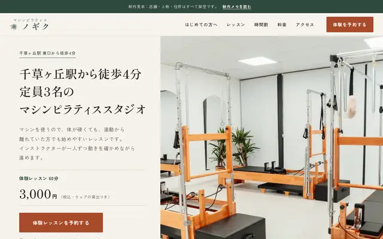
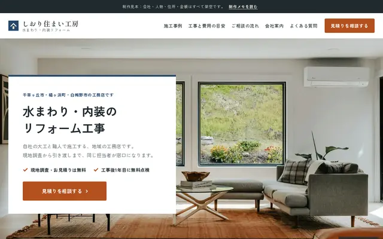
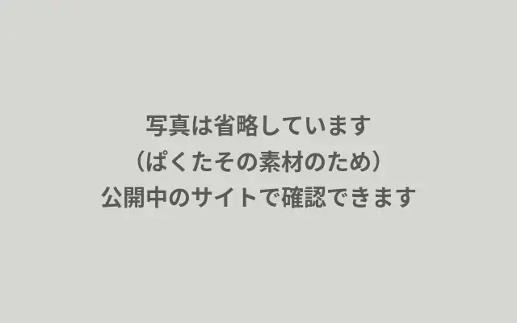
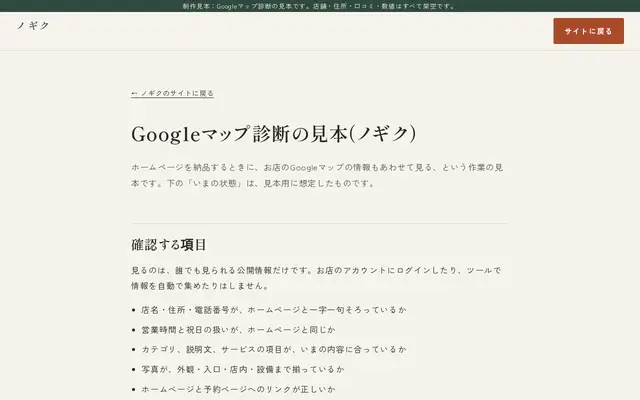

制作実績
業種ごとに作ったサンプルサイトです。各サイトの制作メモに、設計の考え方と表示速度などの測定結果を載せています。

自主制作WordPress版ありリフォーム・工務店
しおり住まい工房
地域の工務店のサイト。施工事例、費用の目安、ご相談の流れを掲載しています。WordPressのテーマ版もあり、管理画面での更新の様子を載せています。


掲載しているのは自主制作のサンプルサイトです。店名・会社名・住所・料金・人物は架空のもので、実在の店舗・会社とは関係ありません。